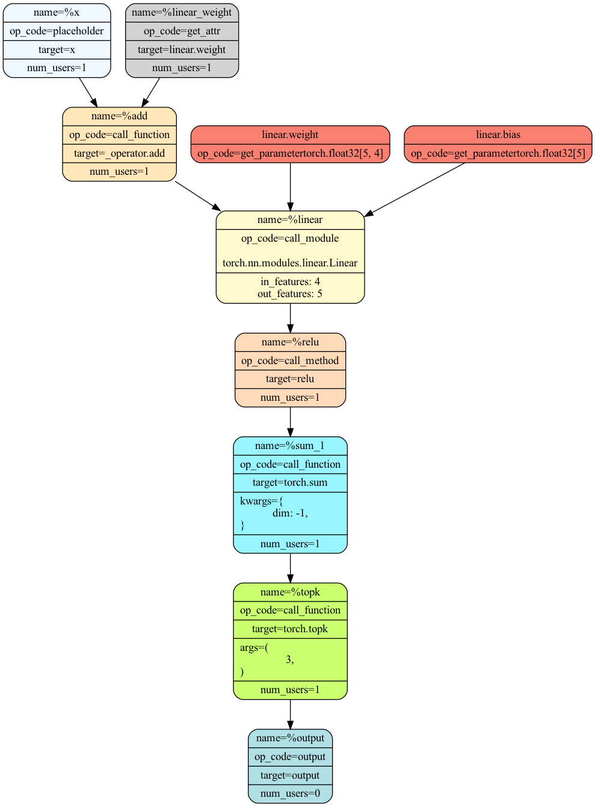

import torch
import torch.nn as nn
from torch.fx import symbolic_trace, GraphModuleTorch.FX
Notes on PyTorch programs transformation module called
torch.fx.
It allows for Python to Python transformations of torch.nn.Module instances, allowing for the creation of pipelines of transformations that we can compose.
The 3 main components are: * Symbolic tracing. * Provides an IR. * Utilities for code generation.
The transformations are called Passes.
An introductory video about Torch Fx.
class SimpleModule(nn.Module):
def __init__(self):
super().__init__()
self.param = nn.Parameter(torch.rand(3, 4))
self.linear = nn.Linear(4, 5)
def forward(self, x: torch.Tensor) -> torch.Tensor:
return torch.topk(torch.sum(
self.linear(x + self.linear.weight).relu(),
dim=-1), 3)
sm = SimpleModule()
sm_traced: GraphModule = symbolic_trace(sm)sm_traced.print_readable()class SimpleModule(torch.nn.Module):
def forward(self, x : torch.Tensor) -> torch.Tensor:
# No stacktrace found for following nodes
linear_weight = self.linear.weight
add = x + linear_weight; x = linear_weight = None
linear = self.linear(add); add = None
relu = linear.relu(); linear = None
sum_1 = torch.sum(relu, dim = -1); relu = None
topk = torch.topk(sum_1, 3); sum_1 = None
return topk
'class SimpleModule(torch.nn.Module):\n def forward(self, x : torch.Tensor) -> torch.Tensor:\n # No stacktrace found for following nodes\n linear_weight = self.linear.weight\n add = x + linear_weight; x = linear_weight = None\n linear = self.linear(add); add = None\n relu = linear.relu(); linear = None\n sum_1 = torch.sum(relu, dim = -1); relu = None\n topk = torch.topk(sum_1, 3); sum_1 = None\n return topk\n 'print(sm_traced.code)
def forward(self, x : torch.Tensor) -> torch.Tensor:
linear_weight = self.linear.weight
add = x + linear_weight; x = linear_weight = None
linear = self.linear(add); add = None
relu = linear.relu(); linear = None
sum_1 = torch.sum(relu, dim = -1); relu = None
topk = torch.topk(sum_1, 3); sum_1 = None
return topk
sm_traced.graph.print_tabular()opcode name target args kwargs
------------- ------------- ---------------------------------------------------- ------------------ -----------
placeholder x x () {}
get_attr linear_weight linear.weight () {}
call_function add <built-in function add> (x, linear_weight) {}
call_module linear linear (add,) {}
call_method relu relu (linear,) {}
call_function sum_1 <built-in method sum of type object> (relu,) {'dim': -1}
call_function topk <built-in method topk of type object> (sum_1, 3) {}
output output output (topk,) {}from torch.fx.passes.graph_drawer import FxGraphDrawer
import IPython
gDrawer = FxGraphDrawer(sm_traced, "SimpleModule")
IPython.display.Image(gDrawer.get_dot_graph().create_png())
Nodes
The intermediate representation is a Graph object, composed of Nodes that represent callsites to various entities.
Properties of a Node:
graph:Graph: TheGraphto which the node belong.name:str: Name to which the output of thisNodewill be assigned.op:str: The opcode, possible values:call_method,call_module,call_function,get_attr,output.target:Union[Callable[..., Any], str]: The target the op should call.args:Type[Argument]: Arguments to pass to thetarget.kwargs:dict[str, Argument]: The kwargs to pass totarget.return_type:Optional[Any]: Python type expression repesenting the output of the node.
GraphModule
It is an nn.Module generated from a fx.Graph. It contains a code and forward method that are generated from its graph attribute.
Graph
It is data structure that represents a method on a GraphModule and gathers information about: inputs to the method, operations that run inside the method and the output of the method. All of this is represented by Node instances.
Method inputs are respresented by placeholder Nodes. The return value is represented by an output Node. Operations withint the method are represented by get_attr, call_function and call_module Nodes.
Modifying Graphs
Direct manipulation
You can modify the nodes in place and construct new fx.GraphModules.
Note: use lint method to make sure the Graph is well-formed.
There is as well a lot of utility funcitons that you can use to rewrite Graphs.
Using symbolic tracing
Using the Proxy machinery. The idea is to use Proxy objects as inputs so that they can automatically record operations into the Graph. You can specify rewrite rules as native Python code.
form torch.fx import Interpreter